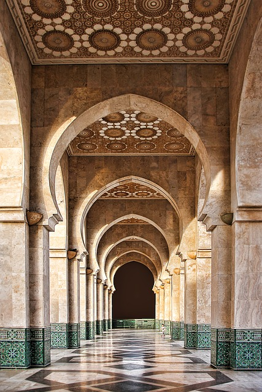

Morocco is one of the countries that is in northern Africa. It is a country that is bordered with Mediterranean Sea and Atlantic Ocean. It is a one of the countries known to have both European and Arabian cultural influence. Morocco is known to have beautiful architecture and old beautiful buildings. They have small local markets call souks that are visited by many tourists to buy local products. Besides the beautiful architecture and culture morocco is also known for their amazing cuisines that are very flavorful .
One of the major attractions in morocco is the Sahara Desert